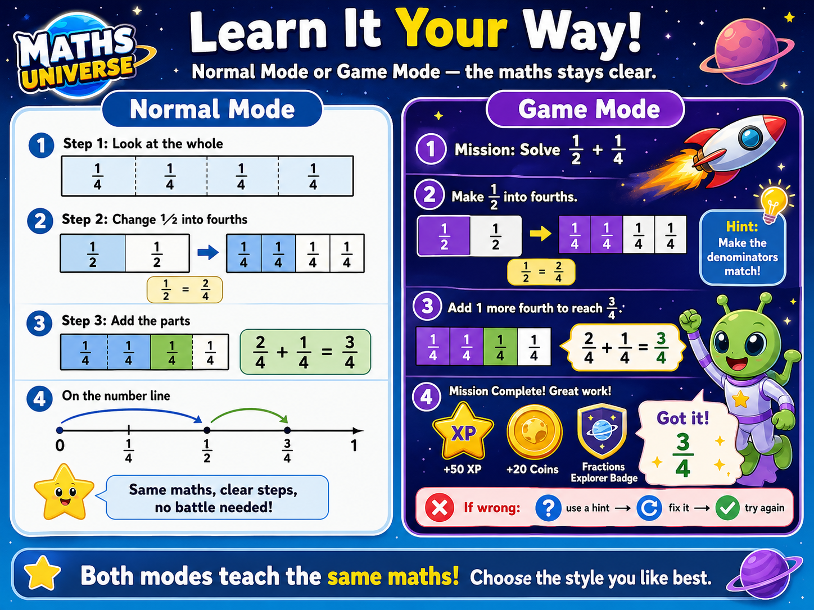
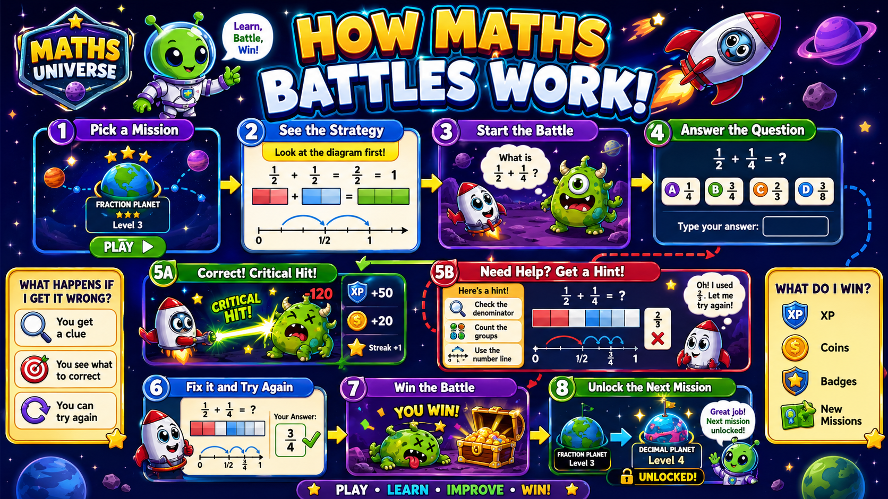

Big Idea
This mission gives you one clear skill, then checks it step by step.
Learn how to use the course, track progress, and study in the right order.
This mission gives you one clear skill, then checks it step by step.
You can learn the same maths in two ways. Pick the one that fits you best.

Before you battle, look at the strategy diagram. If you get a question wrong, the game gives a hint and lets you fix it.

Read the question carefully and underline the important numbers.
Pick the method that matches the topic, not just the first operation you see.
Ask whether your answer is sensible before moving on.
Use this same ladder every time you meet this topic.
Read these before the quiz. They are the traps that lose marks.
Answer one question at a time. The next question opens only after a correct answer.
Start Question 1